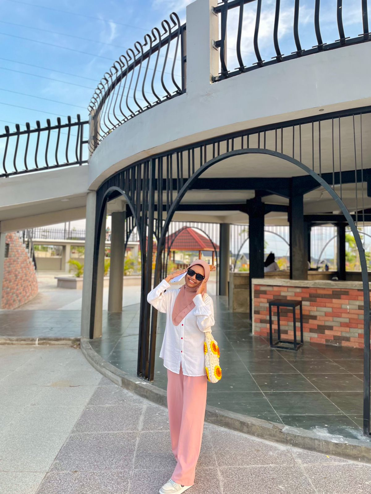
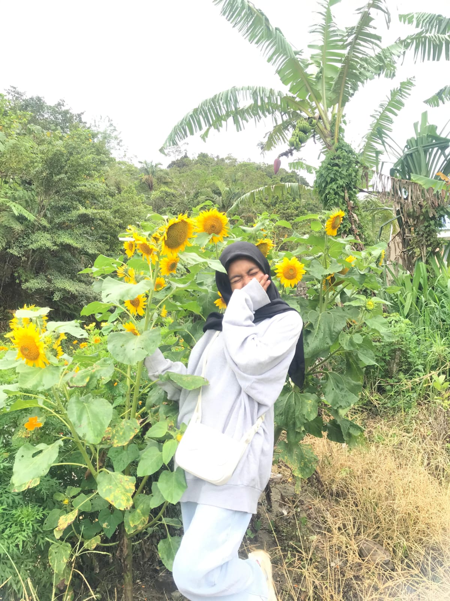
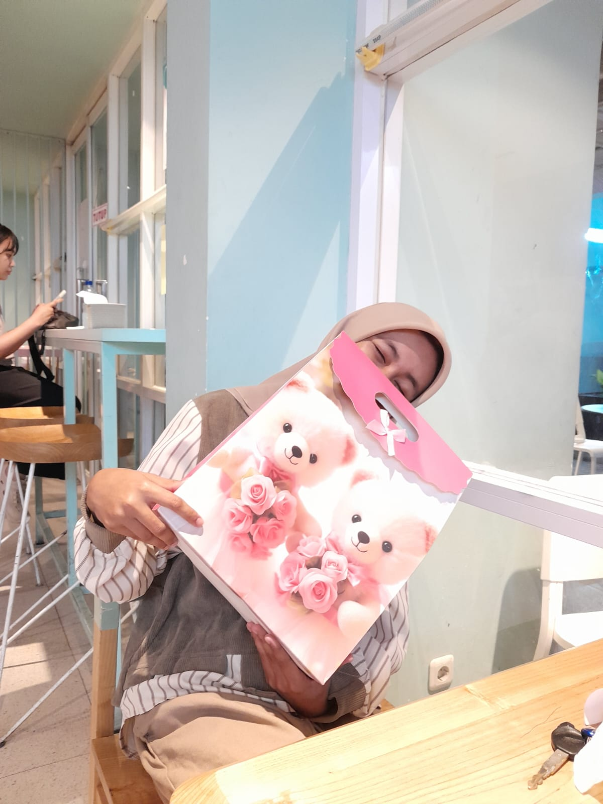
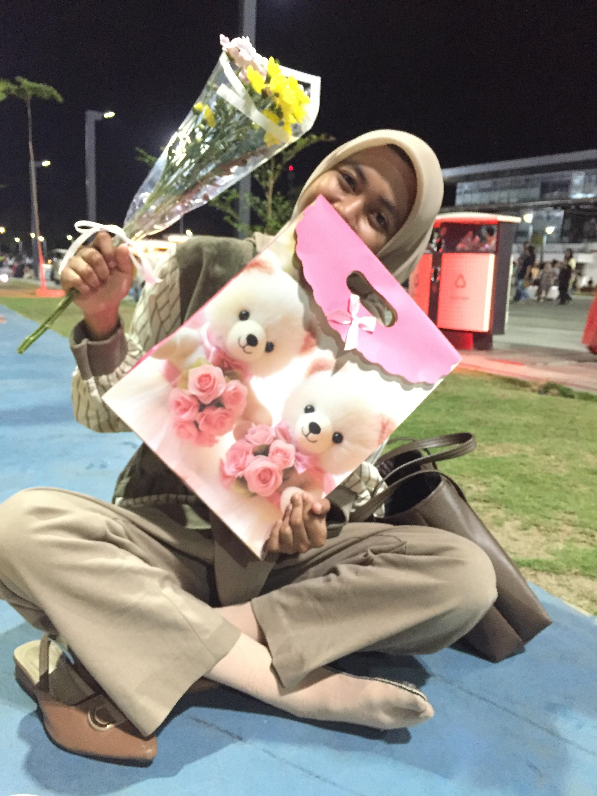

Kita bertemu tanpa rencana.
aku kira pertemuan kita hanya sebatas kenal saja, tidak kusangka sampe sampai sejauh ini.
pada awalnya semua berjalan biasa saja, tapi setiap detik, menit, jam, hari, bulan,
aku merasa ada yang berbeda dalam hatiku.
Tidak selalu mudah,
tapi saya memberanikan diri untuk mengungkapkan isi hatiku, mesti ada rasa dagdigdug,
tapi tetap kupaksakan entah apa hasilnyaa.
tidak kusangka tepat tanggal 18-12-2024 jdi hari paling bahagia untuk saya,
dimana saya mendapatkan cintaa yang ku mau, tanpa paksaan maupun terpaksa.
Adalah jadi hari bahagianya sayangg.
dimana hari ini adalah, hari dimana malaikat surga, melahirkan bidadari tak bersayap,
yang bernama (NAIMATUL JANNAH), seseorang perempuan hebat yang di lahirkan oleh perempuan hebat juga.
semoga di umur sayangg yang ke-20 tahun ini, bisa membanggakan keluarga, jadi orang yang berguna,sehatt selalu,
panjang umur, dilancarkan rezekinya, dilancarkan kuliahnyaa, pokoknya doa terbaik buat sayanggg❤️❤️